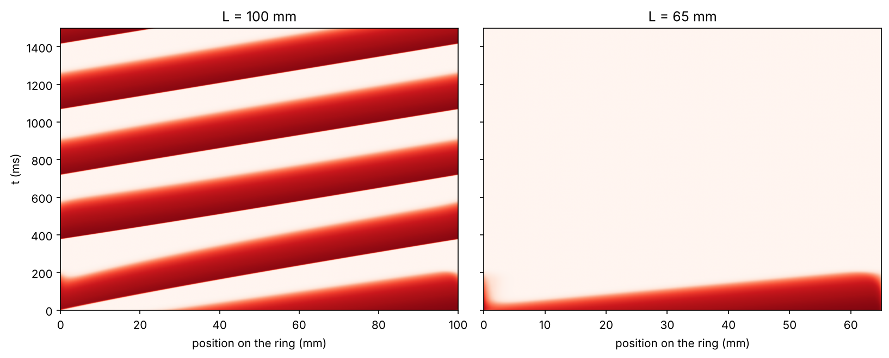

Chapter 5 · Outlook: Propagation of Excitation in Cardiac Tissue
5.3Circulating Excitation
On a ring the wave travels in one direction and, after one round trip, meets the tissue it excited itself. If the ring is shorter than about the wavelength, this tissue is still refractory and the excitation dies out.
For each figure of the section you will find the program that produces it. Change parameters and initial values and observe what happens. Figure and equation numbers refer to the book.
On this page
Fig. 5.4
Circulating excitation on a ring
v(0, t) = v(L, t), Δx = 0.2 mm, Δt = 0.02 ms
For L = 100 mm the excitation circulates with a round-trip time of about 350 ms; for L = 65 mm it dies out. The program also determines the critical length: from L = 69 mm on, the excitation circulates.

# Fig. 5.4: Circulating excitation on a ring (book, Section 5.3, Eq. 5.2)
# Initial state: piece of length L behind the front of a fiber stimulated at its end; L = 100 mm circulates, L = 65 mm dies out
# (c) 2026 Philipp Kügler · Program for the book "Dynamical Systems in the Life Sciences" · MIT License (see LICENSE)
using Printf, Plots
tin = 0.3; tout = 6.0; topen = 100.0; tclose = 115.0; vgate = 0.13 # parameters in ms
D = 0.1; dx = 0.2; dt = 0.02 # mm^2/ms, mm, ms
function euler(v, h, lap)
dv = h .* v.^2 .* (1 .- v) ./ tin .- v ./ tout .+ D .* lap ./ dx^2
dh = ifelse.(v .< vgate, (1 .- h) ./ topen, -h ./ tclose)
return v .+ dt .* dv, h .+ dt .* dh
end
# stimulate a long fiber (250 mm) at the left until the front (v > 0.5) is at 200 mm
function faser()
N = round(Int, 250 / dx) + 1; x = dx .* (0:N-1); v = zeros(N); h = ones(N); n = 0; lap = zeros(N)
while !any(v .> 0.5) || maximum(x[v .> 0.5]) < 200
lap[2:end-1] .= v[3:end] .- 2 .* v[2:end-1] .+ v[1:end-2]; lap[1] = v[2] - v[1]; lap[end] = v[end-1] - v[end]
v, h = euler(v, h, lap)
n * dt < 2.0 && (v[x .<= 1.0] .+= dt * 0.2) # stimulus J = 0.2 for 2 ms
n += 1
end
return v, h, findlast(v .> 0.5)
end
vF, hF, iF = faser()
function ring(L, T; alle = 10)
# ring of length L; returns v every 'alle' time steps and the times at which v reaches 0.5 at the middle of the ring
M = round(Int, L / dx); v = vF[iF-M+1:iF]; h = hF[iF-M+1:iF]
bild = Vector{Vector{Float64}}(); akt = Float64[]; oben = false; mitte = M ÷ 2 + 1
for k in 0:round(Int, T / dt)-1
k % alle == 0 && push!(bild, copy(v))
v, h = euler(v, h, circshift(v, 1) .- 2 .* v .+ circshift(v, -1))
if v[mitte] > 0.5 && !oben; push!(akt, (k + 1) * dt); oben = true; end
v[mitte] < 0.1 && (oben = false)
end
return bild, akt, maximum(v)
end
bilder = []
for L in (100, 65)
B, akt, vmax = ring(L, 1500.0)
@printf("L = %d mm: round-trip times [%s] ms, the excitation %s\n", L, join([@sprintf("%.1f", d) for d in diff(akt)], " "), vmax > 0.5 ? "circulates" : "dies out")
push!(bilder, heatmap(range(0, L, length = length(B[1])), range(0, 1500, length = length(B)), reduce(hcat, B)', color = :reds,
clims = (0, 1), title = "L = $L mm", xlabel = "position on the ring (mm)", ylabel = "t (ms)"))
end
for L in 66:70 # critical length
B, akt, vmax = ring(L, 800.0, alle = 10^9)
@printf("L = %d mm: %s\n", L, vmax > 0.5 ? "circulates" : "dies out")
end
display(plot(bilder..., layout = (1, 2), size = (900, 420)))% Fig. 5.4: Circulating excitation on a ring (book, Section 5.3, Eq. 5.2)
% Initial state: piece of length L behind the front of a fiber stimulated at its end; L = 100 mm circulates, L = 65 mm dies out
% (c) 2026 Philipp Kügler · Program for the book "Dynamical Systems in the Life Sciences" · MIT License (see LICENSE)
tin = 0.3; tout = 6; topen = 100; tclose = 115; vgate = 0.13; % parameters in ms
D = 0.1; dx = 0.2; dt = 0.02; % mm^2/ms, mm, ms
% stimulate a long fiber (250 mm) at the left until the front (v > 0.5) is at 200 mm
N = round(250 / dx) + 1; x = dx * (0:N-1); vF = zeros(1, N); hF = ones(1, N); n = 0;
while ~any(vF > 0.5) || max(x(vF > 0.5)) < 200
lap = [vF(2) - vF(1), vF(3:end) - 2 * vF(2:end-1) + vF(1:end-2), vF(end-1) - vF(end)];
dv = hF .* vF.^2 .* (1 - vF) / tin - vF / tout + D * lap / dx^2;
dh = (vF < vgate) .* (1 - hF) / topen - (vF >= vgate) .* hF / tclose;
vF = vF + dt * dv; hF = hF + dt * dh;
if n * dt < 2, vF(x <= 1) = vF(x <= 1) + dt * 0.2; end % stimulus J = 0.2 for 2 ms
n = n + 1;
end
iF = find(vF > 0.5, 1, 'last');
% rings: length, computing time, picture yes/no
faelle = [100 1500 1; 65 1500 1; 66 800 0; 67 800 0; 68 800 0; 69 800 0; 70 800 0];
for f = 1:size(faelle, 1)
L = faelle(f, 1); T = faelle(f, 2); M = round(L / dx);
v = vF(iF-M+1:iF); h = hF(iF-M+1:iF);
K = round(T / dt); bild = zeros(K / 10, M); akt = []; oben = false; mitte = floor(M / 2) + 1;
for k = 0:K-1
if faelle(f, 3) && mod(k, 10) == 0, bild(k / 10 + 1, :) = v; end
lap = [v(end), v(1:end-1)] - 2 * v + [v(2:end), v(1)]; % ring: neighbors cyclic
dv = h .* v.^2 .* (1 - v) / tin - v / tout + D * lap / dx^2;
dh = (v < vgate) .* (1 - h) / topen - (v >= vgate) .* h / tclose;
v = v + dt * dv; h = h + dt * dh;
if v(mitte) > 0.5 && ~oben, akt(end + 1) = (k + 1) * dt; oben = true; end
if v(mitte) < 0.1, oben = false; end
end
if max(v) > 0.5, txt = 'circulates'; else, txt = 'dies out'; end
if faelle(f, 3)
fprintf('L = %d mm: round-trip times [%s] ms, the excitation %s\n', L, strtrim(sprintf(' %.1f', diff(akt))), txt);
subplot(1, 2, f);
imagesc([0 L], [0 T], bild); axis xy; colormap(flipud(hot)); caxis([0 1]);
title(sprintf('L = %d mm', L)); xlabel('position on the ring (mm)'); ylabel('t (ms)');
else
fprintf('L = %d mm: %s\n', L, txt);
end
end# Fig. 5.4: Circulating excitation on a ring (book, Section 5.3, Eq. 5.2)
# Initial state: piece of length L behind the front of a fiber stimulated at its end; L = 100 mm circulates, L = 65 mm dies out
# (c) 2026 Philipp Kügler · Program for the book "Dynamical Systems in the Life Sciences" · MIT License (see LICENSE)
import numpy as np
import matplotlib.pyplot as plt
tin, tout, topen, tclose, vgate = 0.3, 6.0, 100.0, 115.0, 0.13 # parameters in ms
D, dx, dt = 0.1, 0.2, 0.02 # mm^2/ms, mm, ms
def euler(v, h, lap):
dv = h * v**2 * (1 - v) / tin - v / tout + D * lap / dx**2
dh = np.where(v < vgate, (1 - h) / topen, -h / tclose)
return v + dt * dv, h + dt * dh
# stimulate a long fiber (250 mm) at the left until the front (v > 0.5) is at 200 mm
N = int(round(250 / dx)) + 1; x = dx * np.arange(N); vF = np.zeros(N); hF = np.ones(N); n = 0
while not (vF > 0.5).any() or x[vF > 0.5].max() < 200:
lap = np.empty(N); lap[1:-1] = vF[2:] - 2 * vF[1:-1] + vF[:-2]; lap[0] = vF[1] - vF[0]; lap[-1] = vF[-2] - vF[-1]
vF, hF = euler(vF, hF, lap)
if n * dt < 2.0: vF[x <= 1.0] += dt * 0.2 # stimulus J = 0.2 for 2 ms
n += 1
iF = np.where(vF > 0.5)[0].max()
def ring(L, T, alle=10):
"""Ring of length L; returns v every 'alle' time steps and the times at which v reaches 0.5 at the middle of the ring."""
M = int(round(L / dx)); v = vF[iF - M + 1:iF + 1].copy(); h = hF[iF - M + 1:iF + 1].copy()
bild, akt, oben = [], [], False
for k in range(int(round(T / dt))):
if k % alle == 0: bild.append(v.copy())
v, h = euler(v, h, np.roll(v, 1) - 2 * v + np.roll(v, -1))
if v[M // 2] > 0.5 and not oben: akt.append((k + 1) * dt); oben = True
if v[M // 2] < 0.1: oben = False
return np.array(bild), np.array(akt), v.max()
fig, axs = plt.subplots(1, 2, figsize=(11, 4.5), sharey=True)
for ax, L in zip(axs, (100.0, 65.0)):
B, akt, vmax = ring(L, 1500.0)
print(f"L = {L:.0f} mm: round-trip times {np.round(np.diff(akt), 1)} ms, " + ("the excitation circulates" if vmax > 0.5 else "the excitation dies out"))
ax.imshow(B, origin="lower", aspect="auto", extent=(0, L, 0, 1500), cmap="Reds", vmin=0, vmax=1)
ax.set_title(f"L = {L:.0f} mm"); ax.set_xlabel("position on the ring (mm)")
axs[0].set_ylabel("t (ms)")
for L in range(66, 71): # critical length
B, akt, vmax = ring(float(L), 800.0, alle=10**9)
print(f"L = {L} mm: " + ("circulates" if vmax > 0.5 else "dies out"))
plt.tight_layout()
plt.show()# Fig. 5.4: Circulating excitation on a ring (book, Section 5.3, Eq. 5.2)
# Initial state: piece of length L behind the front of a fiber stimulated at its end; L = 100 mm circulates, L = 65 mm dies out
# (c) 2026 Philipp Kügler · Program for the book "Dynamical Systems in the Life Sciences" · MIT License (see LICENSE)
tin <- 0.3; tout <- 6; topen <- 100; tclose <- 115; vgate <- 0.13 # parameters in ms
D <- 0.1; dx <- 0.2; dt <- 0.02 # mm^2/ms, mm, ms
euler <- function(v, h, lap) {
dv <- h * v^2 * (1 - v) / tin - v / tout + D * lap / dx^2
dh <- ifelse(v < vgate, (1 - h) / topen, -h / tclose)
list(v = v + dt * dv, h = h + dt * dh)
}
# stimulate a long fiber (250 mm) at the left until the front (v > 0.5) is at 200 mm
N <- round(250 / dx) + 1; x <- dx * (0:(N - 1)); vF <- numeric(N); hF <- rep(1, N); n <- 0; innen <- 2:(N - 1)
while (!any(vF > 0.5) || max(x[vF > 0.5]) < 200) {
lap <- c(vF[2] - vF[1], vF[innen + 1] - 2 * vF[innen] + vF[innen - 1], vF[N - 1] - vF[N])
z <- euler(vF, hF, lap); vF <- z$v; hF <- z$h
if (n * dt < 2) vF[x <= 1] <- vF[x <= 1] + dt * 0.2 # stimulus J = 0.2 for 2 ms
n <- n + 1
}
iF <- max(which(vF > 0.5))
ring <- function(L, T, alle = 10) {
# ring of length L; returns v every 'alle' time steps and the times at which v reaches 0.5 at the middle of the ring
M <- round(L / dx); v <- vF[(iF - M + 1):iF]; h <- hF[(iF - M + 1):iF]
bild <- list(); akt <- c(); oben <- FALSE; mitte <- M %/% 2 + 1; vor <- c(2:M, 1); zur <- c(M, 1:(M - 1))
for (k in 0:(round(T / dt) - 1)) {
if (k %% alle == 0) bild[[length(bild) + 1]] <- v
z <- euler(v, h, v[zur] - 2 * v + v[vor]); v <- z$v; h <- z$h
if (v[mitte] > 0.5 && !oben) { akt <- c(akt, (k + 1) * dt); oben <- TRUE }
if (v[mitte] < 0.1) oben <- FALSE
}
list(bild = bild, akt = akt, vmax = max(v))
}
weissrot <- colorRampPalette(c("white", rgb(0.89, 0.44, 0.49), rgb(0.64, 0.08, 0.18), rgb(0.43, 0.04, 0.12)))(64)
par(mfrow = c(1, 2))
for (L in c(100, 65)) {
r <- ring(L, 1500)
cat(sprintf("L = %d mm: round-trip times [%s] ms, the excitation %s\n", L, paste(sprintf("%.1f", diff(r$akt)), collapse = " "),
if (r$vmax > 0.5) "circulates" else "dies out"))
B <- do.call(rbind, r$bild)
image(seq(0, L, length.out = ncol(B)), seq(0, 1500, length.out = nrow(B)), t(B), col = weissrot, zlim = c(0, 1),
main = sprintf("L = %d mm", L), xlab = "position on the ring (mm)", ylab = "t (ms)")
}
for (L in 66:70) { # critical length
r <- ring(L, 800, alle = 1e9)
cat(sprintf("L = %d mm: %s\n", L, if (r$vmax > 0.5) "circulates" else "dies out"))
}Output in the command window
L = 100 mm: round-trip times [201.1 344.3 351.2 346.7] ms, the excitation circulates
L = 65 mm: round-trip times [] ms, the excitation dies out
L = 66 mm: dies out
L = 67 mm: dies out
L = 68 mm: dies out
L = 69 mm: circulates
L = 70 mm: circulates